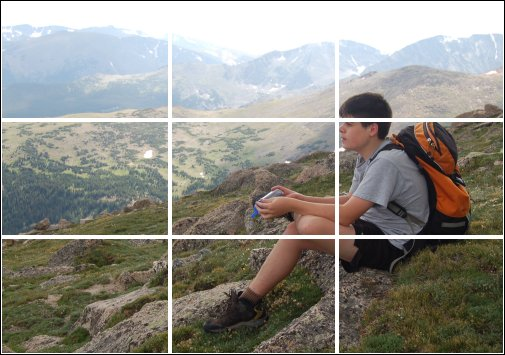

The Rule of Thirds
Good composition often results in good photographs, even of the most mundane subjects. There are several rules of thumb with respect to employing good composition. One of the most used is the Rule of Thirds. The Rule of Thirds is based on the observation that compositions in which the topic of interest is placed directly in the center of the frame tend to be static and uninteresting.
A better approach is to imagine a grid drawn over your photograph that divides it into thirds, like a tic-tac-toe grid. Place your point of interest away from the center of the frame and onto one of the intersection points on the grid (see below).

If you place points of interest into the thirds, your photo becomes more balanced and will enable the viewer to interact with it more naturally. Studies have shown that people's eyes are usually drawn to the location of the the intersection points in the grid rather than the center of the frame. The Rule of Thirds works with this natural way of viewing an image rather than against it. Many digital cameras allow the user to display the grid on the preview screen, making it easier to employ the Rule of Thirds directly before the shot is taken.